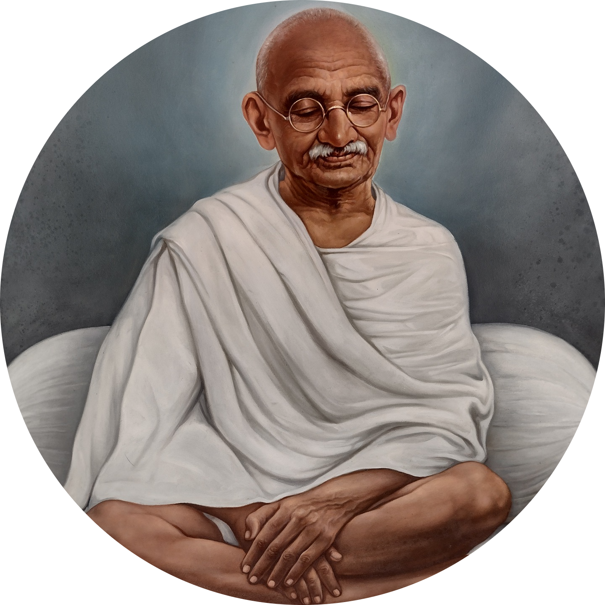

M ohandas Karamchand Gandhi (2 October 1869-30 January 1948) was an Indian lawyer,[anti-colonial nationalist and political ethicist[6] who employed nonviolent resistance to lead the successful campaign for India's independence from British rule, and to later inspire movements for civil rights and freedom across the world. The honorific Mahātmā (Sanskrit: "great-souled", "venerable"), first applied to him in 1914 in South Africa, is now used throughout the world. Born and raised in a Hindu family in coastal Gujarat, Gandhi trained in the law at the Inner Temple, London, and was called to the bar at age 22 in June 1891. After two uncertain years in India, where he was unable to start a successful law practice, he moved to South Africa in 1893 to represent an Indian merchant in a lawsuit. He went on to live in South Africa for 21 years. It was here that Gandhi raised a family and first employed nonviolent resistance in a campaign for civil rights. In 1915, aged 45, he returned to India and soon set about organising peasants, farmers, and urban labourers to protest against excessive land-tax and discrimination. Assuming leadership of the Indian National Congress in 1921, Gandhi led nationwide campaigns for easing poverty, expanding women's rights, building religious and ethnic amity, ending untouchability, and, above all, achieving swaraj or self-rule. Gandhi adopted the short dhoti woven with hand-spun yarn as a mark of identification with India's rural poor. He began to live in a self-sufficient residential community, to eat simple food, and undertake long fasts as a means of both introspection and political protest. Bringing anti-colonial nationalism to the common Indians, Gandhi led them in challenging the British-imposed salt tax with the 400 km (250 mi) Dandi Salt March in 1930 and in calling for the British to quit India in 1942. He was imprisoned many times and for many years in both South Africa and India. Gandhi's vision of an independent India based on religious pluralism was challenged in the early 1940s by a Muslim nationalism which demanded a separate homeland for Muslims within British India.[10] In August 1947, Britain granted independence, but the British Indian Empire[10] was partitioned into two dominions, a Hindu-majority India and a Muslim-majority Pakistan.[11] As many displaced Hindus, Muslims, and Sikhs made their way to their new lands, religious violence broke out, especially in the Punjab and Bengal. Abstaining from the official celebration of independence, Gandhi visited the affected areas, attempting to alleviate distress. In the months following, he undertook several hunger strikes to stop the religious violence. The last of these, begun in Delhi on 12 January 1948 when he was 78,[12] also had the indirect goal of pressuring India to pay out some cash assets owed to Pakistan.[12] Although the Government of India relented, as did the religious rioters, the belief that Gandhi had been too resolute in his defence of both Pakistan and Indian Muslims, especially those besieged in Delhi, spread among some Hindus in India.[13][12] Among these was Nathuram Godse, a militant Hindu nationalist from western India, who assassinated Gandhi by firing three bullets into his chest at an interfaith prayer meeting in Delhi on 30 January 1948.[14] Gandhi's birthday, 2 October, is commemorated in India as Gandhi Jayanti, a national holiday, and worldwide as the International Day of Nonviolence. Gandhi is commonly, though not formally, considered the Father of the Nation in India[15][16] and was commonly called Bapu[17] (Gujarati: endearment for father.